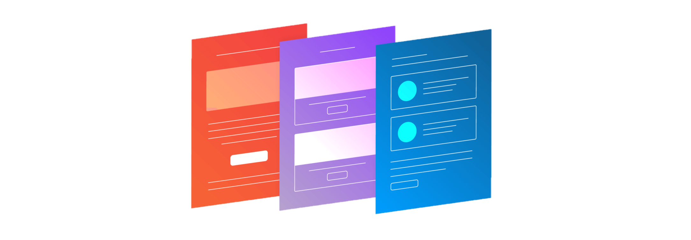
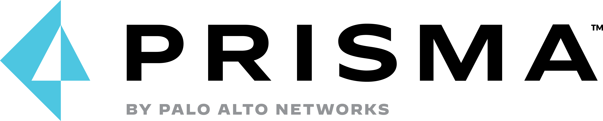
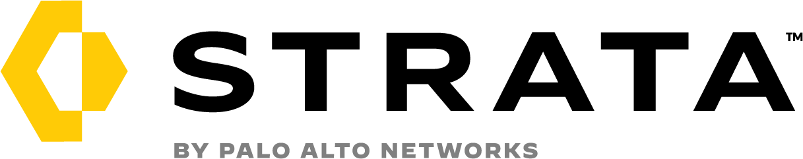
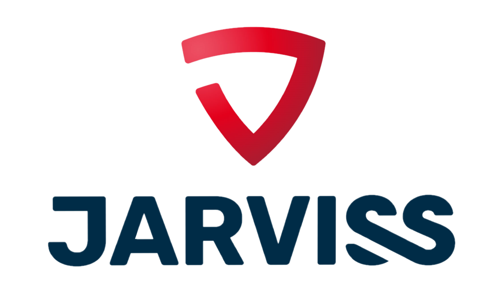

Internship at Jarviss
Gauthier Vandenabeele

INTRODUCTION
Introduction to the company, Jan 24
THE FIRST DAYS
New company, new technologies, Jan 24-28
MY FIRST TASK
Juniper Mist VC, Feb 14-15
ITEGRATIONS
Cortex XSOAR integration for Palo Alto Firewalls, Feb 17,21

AUTOMATED EMAILS WITH CORTEX XSOAR
XSOAR data collection email and HTML messaging template, Feb 22

UTD CLOUD NATIVE SECURITY
Prisma Cloud Solutions, Feb 24

PALO ALTO FIREWALL
pa-460 firewall deploy, Mar 8

RAID FALURE RECOVERY
recover development environment, Mar 10,14,15

ABOUT
This is a blog about my internship at Jarviss. My mentor at the company is Xanti Hermo.
Odisee, my school, also provided a mentor which is Sven Sanders.
I started on the 24th of January 2022 and finished my internship on the 26th of May.